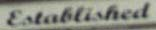
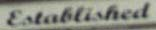
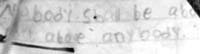
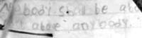
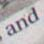
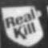
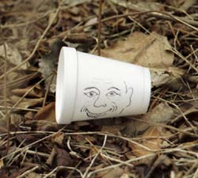

Saturday, April 10, 2004
Risen

Crown

Just as Holy Week leads to the extremes of theology, this tree leads to the extremes of botany. There are realms beyond daily bread and daily trees.
The thorny execrescences erupt from the tree. Are they disease ? Mutation ? Possession ? Transmogrification ? Christ's thorns were imposed, an instrument of what Simone Weil calls "penal suffering."
Fearful of losing their position of privilege, the political and religious authorities of Christ's day -- the hierarchy, the power-brokers -- killed Christ. They were protecting their turf, and their texts and their perks. How dare that radical make such outrageous claims ! Son of God ? Abolish the law, condense the whole canon to "Love God and Love your neighbor" ? What dangerous, seditious nonsense ! How dare he stir up the underclass, the disenfranchised -- there could be serious unrest !
This Holy Week, Archbishop O'Malley pointedly did not wash the feet of women as there were no woman apostles. In his homily last Sunday he listed "feminism" among this century's cultural ills. No women must defile the sacred turf of the priesthood. Every letter of the sacred text must be followed. Heaven ? Not for Protestants, Buddhists, atheists. Marriage ? One man, one woman. Sex ? For making babies only. Divorced ? You are -- I am -- a "scandal." Our lips must not defile the host.
The prickly Archbishop defends his turf, his texts, his perks.

What are these thorns ?
I can only stand and wonder.
Seven Love Poems
MACHINE ART


 

IN THE OFFICE OF LOVE
 
ERODENTIA

FLOCK




DE SALVO


MANIFESTO


AND IF ALL ELSE FAILS THERE'S ALWAYS THIS



Friday, April 09, 2004
Good Friday
Thursday, April 08, 2004
Quick, Roll Up The Welcome Mat

Just Visiting
Excuse me, I am just visiting,
can you tell me where I can find our host ?
Yes, those are my pantyhose
hanging in the bathroom.
They should be dry by morning.
Excuse me, I am just the house guest,
do you remember when or how I got here ?
That sandwich you’re eating looks awfully good,
may I have it ? Thank you.
I would also like that beer.
Excuse me, I don’t really live here,
but I can’t help noticing your dapper husband.
In fact, last week I seduced him
and now I am great with child !
Will you care for it when we fly to Barbados ?
Pardon me, pardon me, I know this is not my house,
but the milkman is dead on the kitchen floor
and I have run out of chalk !
(If you’re offering the Medical Examiner some coffee,
I shall have some, too. Are there cookies ?)
Excuse me, sorry to interrupt, it’s just me, the guest,
my cousin Tadeusz has just arrived from the sanitarium,
and will need to be quarantined.
Can you tell me where to find the cotton bandages
and the duct tape ? No, please don’t get up.
Hello, excuse me. I am the guest.
My cat is stuck in your harp again
and it’s five minutes to show time. This time
please avoid the strings where he is tangled.
He has such delicate skin.
Um, it’s me again, the houseguest, remember me ?
Tomorrow the roman a clef I have written about you
will be published. I decided to leave in
the chapter about the goats after all.
I hope I have not ruined your lives.
Oh, the sorry lot of the visitor --
one moment enjoying all the intrigues and passions
that la comedie humaine has to offer (even the bitter ones
and the ones of a wry and piquant ambiguity)
and the next moment gone.
12.5.95
Wednesday, April 07, 2004
Water

I've been prowling the end-of-winter riverbank for weeks, increasingly disheartened by the trash mixed in with the tangles of dead twigs and leaves. A brief snowfall covered it all up for a few days, but when the sun came out, and the snow melted, there it was, ugly as ever.
Last week's days of deluging rain swelled the river way beyond its banks. I thought the onrushing water would have a cleansing effect. I remembered Robert DeNiro's famous speech in Taxi Driver about the rain washing the filth away. But no. The flooded lowlands became marinas of brown water filled with bobbing plastic containers of all shapes and sizes. Whatever downstream trash washed seaward was replaced by even more from upstream.
The annual Charles River clean-up is on April 24th.
I think I'll sign up.
I've been prowling the end-of-winter riverbank for weeks, increasingly disheartened by the trash mixed in with the tangles of dead twigs and leaves. A brief snowfall covered it all up for a few days, but when the sun came out, and the snow melted, there it was, ugly as ever.
Last week's days of deluging rain swelled the river way beyond its banks. I thought the onrushing water would have a cleansing effect. I remembered Robert DeNiro's famous speech in Taxi Driver about the rain washing the filth away. But no. The flooded lowlands became marinas of brown water filled with bobbing plastic containers of all shapes and sizes. Whatever downstream trash washed seaward was replaced by even more from upstream.
The annual Charles River clean-up is on April 24th.
I think I'll sign up.
Tuesday, April 06, 2004
Poetry Pulitzer ! Franz Wright !
He won it for his book Walking To Martha's Vinyard . And he's a fellow Walthamian who haunts the banks of the same river as I do, a few miles upstream.
Finding a new poet -- new to me, I mean -- who inhabits my physical and metaphysical neighborhood is a wonderful gift.
The New Yorker: Online Only
Margin: Exploring Modern Magical Realism/Selected Poems from The Beforelife by Franz Wright
Sunday, April 04, 2004
More Notes From The Threshold

He alone feels authentic sorrow who realizes not only what he is, but that he is.
This is the author of The Cloud of Unknowing anticipating Sartre and Camus by centuries and articulating our core existential plight. For me there is no other reason than this ontological one for even bothering to investigate religious thought: religions are concerned, among other things, with formulating, responding to, articulating, expressing the ultimate "that we are."
A fully secular humanism addresses matters of ethics perfectly adequately, and in many cases even more equitably than religious codes. Science describes how things came to be, what they are and how they function. Philosophy investigates how language operates.
The "that we are" is a matter of great mystery and anxiety.
And all of these discourses -- and all of our experience of the world -- are shaped by and constrained by our senses and brains. Buddhism's description of this is especially prescient. Our brains seem to have a built in preference for seeking antecedents, causes and effects, for asking how and why. Why -- aside from questions of human motivation -- is often just an overly teleological redaction of how.
One would like to arrive at the answer -- if there is an answer, if there is even an articulable question -- oneself. Rather than accept a body of doctrine as the truth. An answer from "the rag and bone shop of the heart," as Yeats said.
This is the attraction of Buddhism. What is more rag and bone shop that the body/mind on the zafu ? But the Dalai Lama said look to your own tradition and so I looked.
I imagine a Christian would reply that "receiving Jesus as my personal saviour" is fully experiential. But it seems to me to involve acceptance of a pre-formed system, or mechanism, and a complicated one at that, trinitarian, eschatological, hierarchical and patriarchal. And exclusionary: only we, the true believers, the followers of all the Biblical rules, the confirmed and communed, get the ultimate ontological reward. Heaven. Immortality.
Maybe a religion is simply a meta language for discussing being. John calls Christ the Word, the logos. Can this Word be understood as "embodied participation in the Godhead," where Godhead is the undual, intrinsic nature-of-things, source, foundation ?
I suspect that rises to the level of a named heresy.
The threshold is the opposite of the anchorhold. I have yearned, I confess, for an anchorhold. To be immured within a Cathedral wall. Or at least within the warm clasp of a congregation, a sangha. Even to be a cloistered religious. A sister, conjoined to other sisters by spiritual blood. These yearnings are a metalanguage of my particular psychology, the way my brain works. A way of expressing my ambivalent solitude, my ambivalent outsiderhood. Nothing to do with "religion."
I am, however, a liminal creature. I prowl the edges, outskirts, boundaries and thresholds of things. I withhold, draw back, go part way, hesitate, retreat. Hence, I think, my attraction to Simone Weil, who, despite her intense attraction to Catholicism and her undeniable mystical experiences, never accepted baptism. For her, the word "Christ" was a way of speaking about caring for the downtrodden, the marginal, the afflicted of society. The mediator of an infinitely distant God.
I wonder: if she (or Thomas Merton, for that matter) had lived longer, would their need for a mediating Word have fallen away and would they have more fully embraced a more non-dualistic Buddhist view ?
Religion is dangerous. The world is full of people puffed up with righteous conviction, harnessing their God to their geopolitical causes. The language of Crusade is just below the surface of discourse, and sometimes quite overt. It's enough to keep one quite clear of any church or any religious group that sets itself apart with ritual and costume and received tradition.
How apophatic can one get ?
Consider the sublimely ridiculous Church of the Holy Armadillo, sometimes known as the Church of the Darth Vader Helmet. It's the Sacred Heart Church in Waltham, a few blocks from my house. The whole area under the front arch and above the door consists of a huge, lurid, stylized, stained glass rendition of Jesus that, lit up at night, is truly disturbing. Very heavy on the blood red. This church dominates an ugly intersection. At the three other corners are a municipal swimming pool, empty for years because of budget cuts, an abandones and half-gutted gas station and a low, white market labeled "TRUE CONVENIENCE."

This is an edifice that helps one distinguish true religious feeling from any purely aesthetic or transcendental response to architecture. It's one of the many local churches into which I have not gone. I am very ecumenically unchurched.
Never more so than on Sunday Mornings.